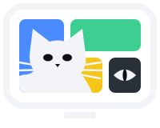

CurioCatTerms of use
Last updated 30 October 2026
CurioCat is a play app for cats: prey and sounds on your TV, for your cat to watch, chase and enjoy. By using CurioCat you agree to these terms. Please read them, especially the parts about keeping your cat and your TV safe.
Keep your TV safe
Cats may leap at, paw at or climb the screen. A large TV can be pulled or knocked over by a lunging cat, which could hurt your cat, you or others, and damage the TV.
Before letting your cat play, wall-mount the TV or strap it securely to the wall or its stand, following the TV maker's instructions.
Claws can scratch or damage the screen. Screens are delicate and easily marked.
You are responsible for securing your TV and for any damage to it, to other property, or caused by it falling.
Keep your cat safe and happy
Supervise your cat while CurioCat is on, especially the first few times, and stop if your cat seems stressed, frightened, frustrated or over-excited.
Chasing something that can never be caught can frustrate some cats. CurioCat ends every session with a catch, and a real toy or a treat afterwards is even better. Screen play is not a replacement for real play and company.
CurioCat uses colours cats see well and nothing flashes, but if your cat reacts in an unusual way, such as twitching, collapsing or behaving strangely, stop at once and contact your vet.
Sounds can startle cats, other pets and people. Start with a low volume and keep it comfortable.
Keep play sessions short, and give your cat breaks.
Not veterinary advice
CurioCat is for entertainment. Nothing in it is veterinary, medical or behavioural advice, and it is not a treatment for anxiety, boredom or any other condition.
If you have any concerns about your cat's health or behaviour, talk to your vet.
The app
CurioCat is provided as it is, without any promise that it will always work, be free of errors, or suit your cat. Features may change or stop.
To the extent the law allows, we are not liable for any loss, damage or injury arising from using CurioCat, including damage to your TV or property, or harm to your pets.
Nothing in these terms limits liability that cannot be limited by law, such as for death or personal injury caused by negligence, or affects your legal rights as a consumer.
The tiles CurioCat shows on your TV's home screen use pictures from the CurioCat website. If the website is unavailable, the tiles may not show; the app still works.
Changes and contact
We may update these terms. If the changes matter, CurioCat will ask you to accept them again.
These terms are governed by the law of the part of the United Kingdom where you live.
Questions: [contact email].